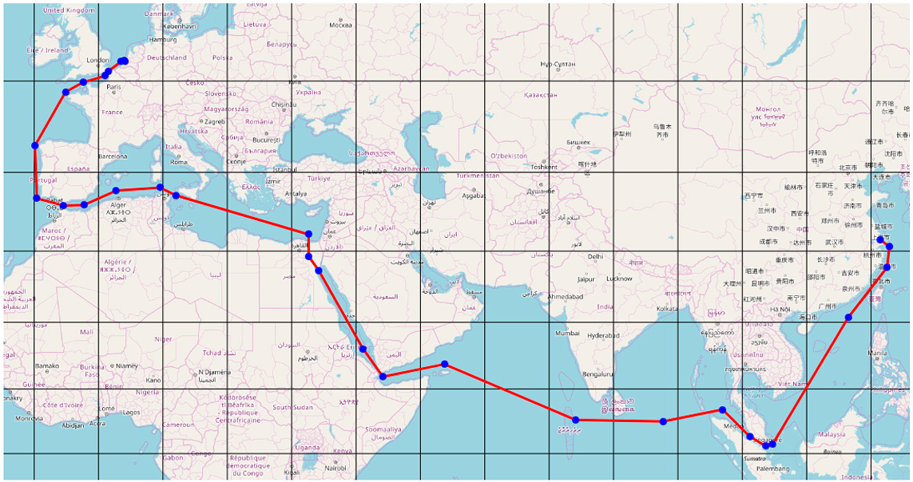

Revolutionizing Global Freight
With Smarter Sea Routes.
How Data, AI, and Technology Are Redefining Maritime Logistics
Maritime logistics has long been the backbone of global trade, responsible for transporting over 80% of the world's goods. However, the industry is ripe for innovation—dictated by outdated maps, seasonal predictions, and manual decisions—are no longer sufficient in a world that demands speed, efficiency, and sustainability. With rising fuel costs, unpredictable weather, and geopolitical tensions, companies are turning to smarter technology-driven solutions.
Smarter Sea Routes: What Are They?
Smarter sea routes refer to optimized maritime paths powered by real-time data, artificial intelligence, satellite imagery, and predictive analytics. These routes adapt dynamically based on current ocean conditions, port traffic, geopolitical risks, and even carbon footprint goals. Rather than following fixed lines, ships now adjust en route to avoid storms, reduce fuel usage, and arrive at port using less congested times.
The Role of AI and Big Data
AI algorithms analyze historical shipping data, weather forecasts, ocean currents, and port activity to suggest the fastest and safest routes. Big data platforms collect information from thousands of vessels, sensors, and satellites, creating a living map of the sea. Machine learning continuously improves the system’s accuracy, allowing ships to make smarter decisions every hour of the voyage.
Admin is a CEO of Heng168 Bank
05 May, 2025New Post
Share this Post: